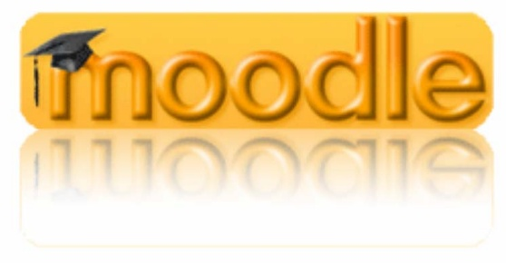
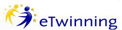

Medien
Medienkonzept
Grundlage unserer Überlegungen zur Medienerziehung ist der hier in Auszügen zitierte Text „Medienerziehung in der Schule – Orientierungsrahmen der Bund-Länder-Kommission für Bildungsplanung und Forschungsförderung“:
„Bildung ist zu allen Zeiten von Medien unterstützt, aufrechterhalten, vertieft, aber auch verändert worden. Bücher, Texte und Bilder sind die klassischen Bildungsmedien der Schule.
Hinzugekommen sind die elektronischen Medien mit neuen Ausdrucksformen und Wirkungsweisen. Medien sind Miterzieher geworden. Sie können Kommunikation erleichtern und bieten Orientierung an. Medien greifen Themen des gesellschaftlichen Lebens auf und wirken sich so stark auf die persönliche Lebensgestaltung schon in früher Kindheit und Jugend aus, dass Bildung und Erziehung in Elternhaus und Schule tiefer und unmittelbarer als früher betroffen sind. Die insbesondere über die elektronischen Medien an Kinder und Jugendliche herangetragenen Informationen, Probleme und Wertorientierungen überdecken in ihrer Wirkung oft die Bedeutung familiärer Erziehung und schulischer Bildung. Es muss deshalb von einer veränderten Bildungssituation, d.h. auch von veränderten Lernvoraussetzungen und Lernmöglichkeiten in der Schule ausgegangen werden.“
Vor dem Hintergrund dieser Entwicklung bestehen Chance und Aufgabe der Schule darin, die Nutzungs- und Gestaltungsmöglichkeiten der Medien in ihrem Wert anzuerkennen, sie zugleich in ihren Wirkungen durchschaubar zu machen und diese ggf. zu korrigieren. Die Medienwelt und der von ihr ausgehende Bildungseinfluss sowie die von der Schule verantworteten Bildungsprozesse sollten zusammengesehen werden. Schule und Medien müssen ihre je eigenen und spezifischen Funktionen im Bildungsgeschehen erkennen und wahrnehmen.
Daraus ergeben sich für die Umsetzung in der Schule verschiedene Ziele:
Schulen können die Medien nutzen, um das Lehren und Lernen zu verbessern,
Schüler*innen sollen Medien einsetzen, um sich Informationen und Wissen zu verschaffen, sie sollen die Hilfe von Medien zum Lösen von Problemen und Treffen von Entscheidungen einschätzen lernen,
sie sollen mit Medien gestalten und ihre Kreativität entwickeln,
nicht zuletzt sollen sie den Gebrauch von Medien beurteilen, kritisch bewerten und diese in ihren gesellschaftlichen Zusammenhängen sehen und
der Umgang mit Medien sollte sachgerecht, selbstbestimmt, kreativ und sozial verantwortlich sein!
Die Medien sollten altersgemäß eingesetzt und die Fähigkeiten der Schüler*innen systematisch entwickelt werden mit dem Ziel ein aktives, individuelles und motivierendes Lernen zu erreichen. Dazu ist es notwendig, dass die Lehrkräfte über die entsprechende Medienkompetenz verfügen.
In den Lehrplänen ist die Medienerziehung in allen Jahrgangsstufen vorgesehen. Die Beschäftigung mit ihnen ist eine übergreifende, integrative Erziehungsaufgabe, an der alle Fächer in unterschiedlichem Rahmen beteiligt sind.
Unser Mediencurriculum wird in Zusammenarbeit aller Fächer ständig weiterentwickelt.
Die Übersicht zeigt den als verbindlich beschlossenen Medieneinsatz in den einzelnen Stufen:
Jgst. |
Unterrichtseinheit / Projekt |
Fach |
Unterrichtsinhalte / Medienbezüge |
Software |
|---|---|---|---|---|
5/6 |
Die Computer im Schulnetz Benutzungsregeln der Computerräume, des SLZ und des Internets („Netiquette“), Technik der Internetnutzung, Nutzung des Schulnetzwerks: Account, Home-Ordner, Speichern/Laden |
M, D, etc. |
– |
Betriebssystem, Browser, Word |
5/6 |
Geometrie, Größen, Bruchrechnung |
M |
Koordinatensystem, Vielecke, Tabellen (ohne Berechnungen) |
Euklid Dynageo, GeoGebra, Word, Excel |
5/6 |
Klassenzeitung |
D |
– |
Word |
5/6 |
Mediennutzung |
Umfragen/Interviews, Stellungnahme zur Mediennutzung, Bewusstmachen eigener Gewohnheiten |
D |
Medienverhalten analysieren |
7 |
Algebra, Geometrie |
M |
Lineare Gleichungen, Geraden, Prozent-, Zinsrechnung, Dreieckskonstruktionen |
Euklid Dynageo, WinPlot, Excel |
8 |
Projekt „Medienkompetenz im Web 2.0“ |
Projekttage |
Internet- und Medienkompetenz |
Internet (facebook etc.) |
8 |
Projekt Zeitung (ZEUS) |
D |
Druckerzeugnisse |
Word, Publisher |
11 |
Facharbeiten |
alle |
Präsentationen |
unterschiedliche Medien, PowerPoint |
Blended Learning mit MOODLE, eTwinning und dropbox
 Blended Learning bezeichnet die Form des Kernens, die durch die Kombination von Lernangeboten in Präsenzphasen im Unterricht und Selbstlernphasen unter Benutzung digitaler Medien über eine Internet-Plattform. Untersuchungen zeigen einen erhöhten Lernerfolg durch die Ansprache vieler Lernkanäle. MOODLE ist die Open-Source-Plattform zur Erstellung und Verwendung von Unterrichtsmaterialien.
Schon im Jahr 2008 erarbeitete eine Gruppe von deutschen und niederländischen Lehrern aus der EuRegio Rhein-Maas-Nord Unterrichtsreihen im MINT-Bereich, die das Konzept Blended Learning mit MOODLE benutzen. Das GREM war mit mehreren Lehrern von Anfang an dabei.
Das Projekt war der Startpunkt für den Einsatz von MOODLE in vielen Schulen der EuRegio. Auch am GREM wird Blended Learning mit MOODLE als Unterrichtsmethode eingesetzt. Die Materialien, die größtenteils von den Lehrern erstellt worden sind, liegen dabei sicher geschützt auf Servern des kommunalen Rechenzentrums KRZN im Internet und sind von den Schüler*innen jederzeit auch zuhause erreichbar.
 Die EU richtete eTwinning ein, um den Informationsaustausch europäischer Schulen in diversen Projekten zu unterstützen. Mittels einer einfach zu bedienenden Internet-Plattform arbeiten mehrere Partnerklassen in gemeinsamen Unterrichtsprojekten zusammen. Dabei werden die Werkzeuge Chat, Email, Webspace und Forum im Unterricht und von zuhause aus eingesetzt. Die Ergebnisse können anschließend zum Beispiel als Website oder Wiki präsentiert werden.
Wir nutzen eTwinning im Rahmen unserer Comenius-Projekte, aber auch im „normalen“ Unterricht, um das Blended Learning zu fördern.
Immer häufiger genutzt wird die „cloud“ als gemeinsamer Speicherort für unterrichtsrelevante Dateien; zu nennen ist hier insbesondere der kostenfreie Dienst „dropbox“. Wir bevorzugen jedoch die Nutzung unserer MOODLE-Plattform wegen der besonders geschützten Server des Rechenzentrums Niederrhein.